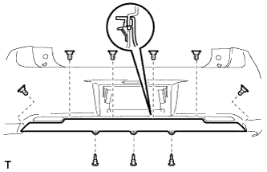
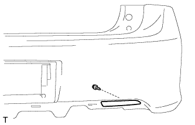
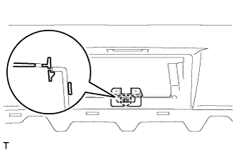
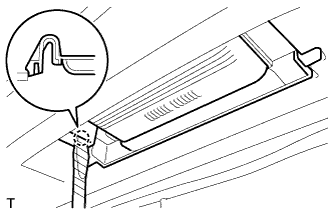
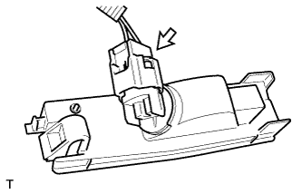
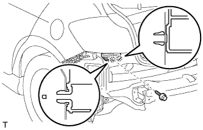
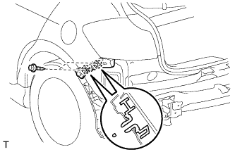

Rear Bumper Disassembly |
| 1. Remove Rear Bumper Guard |
 |
Using a clip remover, remove the 3 clips.
Remove the 6 outside molding retainers and rear bumper guard.
| 2. Remove Reflex Reflector Assembly RH |
 |
Remove the screw and reflex reflector assembly RH.
| 3. Remove Reflex Reflector Assembly LH |
| 4. Remove Rear Bumper Retainer LWR RH |
 |
Disengage the claw and remove the rear bumper retainer lower RH.
| 5. Remove License Plate Light Assembly |
 |
Using a screwdriver with its tip wrapped in protective tape, disengage the claws and separate the license plate light assembly from the rear bumper assembly.
 |
Disconnect the connector and remove the license plate light assembly.
| 6. Remove Rear Bumper Retainer UPR LH |
 |
Remove the screw.
Disengage the 2 claws and remove the rear bumper retainer UPR LH.
| 7. Remove Rear Bumper Retainer UPR RH |
| 8. Remove Rear Bumper Side Retainer LH |
 |
Remove the 2 screws.
Disengage the 2 claws and remove the rear bumper side retainer LH.
| 9. Remove Rear Bumper Side Retainer RH |